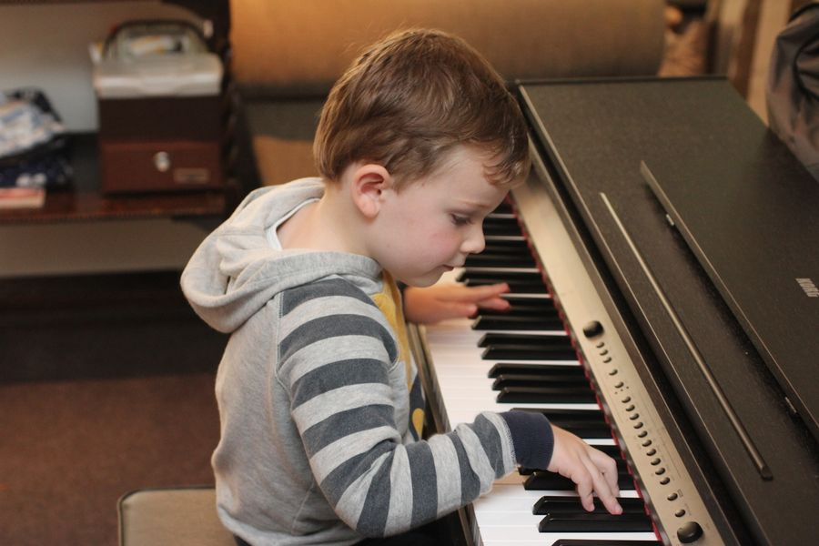
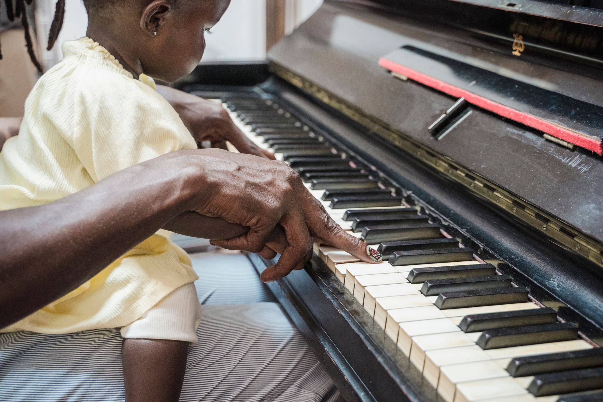
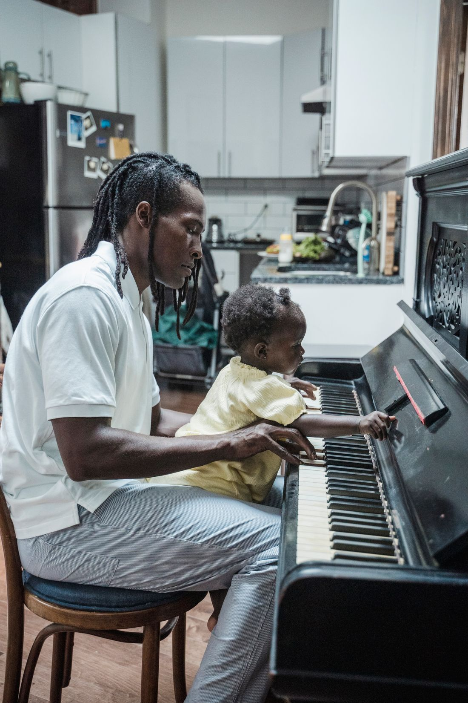
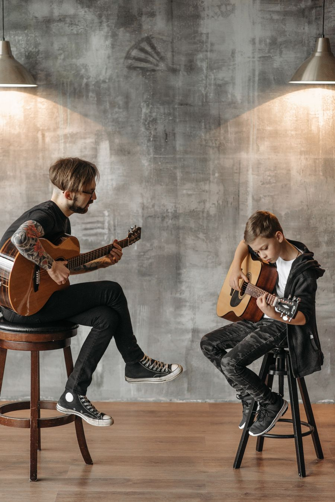
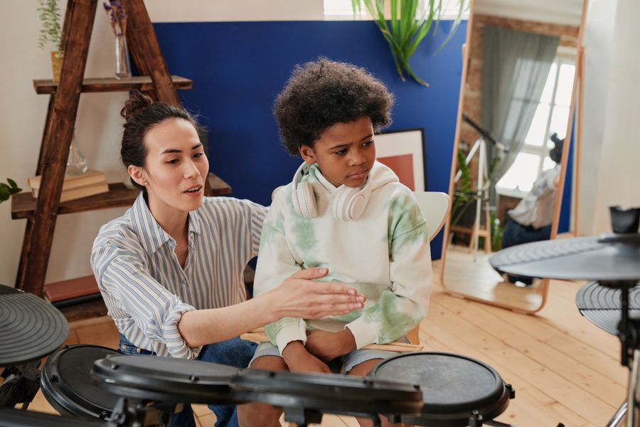
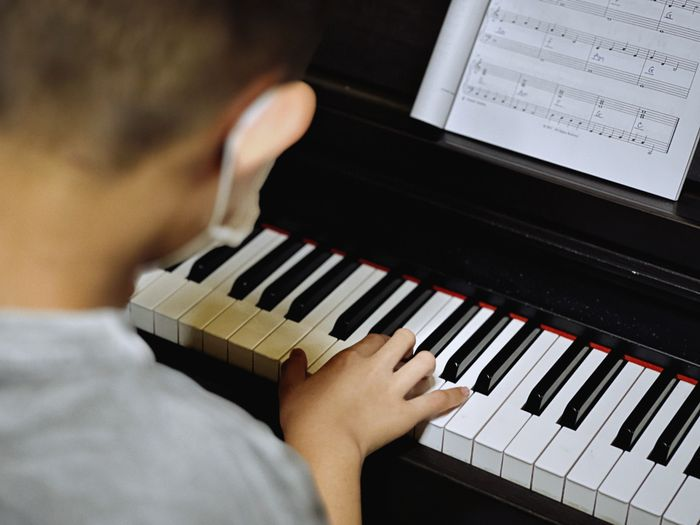
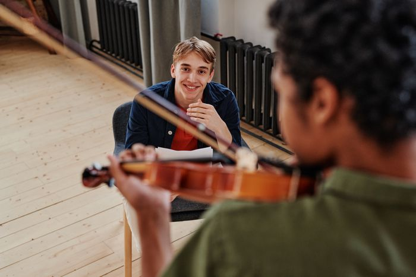

만 5세 +Piano 피아노
바이엘부터 체르니 40까지, 진도표로 한 권씩.
주 2회 30분 · 월 160,000원
피아노 레슨
Yeoeum music room
피아노 · 바이올린 · 기타 · 드럼, 한 사람에 한 선생님.

첫 레슨 날에는 집에서 어떻게 연습하면 좋을지 보호자와 함께 이야기합니다.
복도 끝 방에서 드럼 소리가 새어 나와도 옆방 피아노는 조용합니다. 방마다 방음 문을 달았습니다.
처음 한 달은 주 1회 30분으로 시작합니다. 손에 맞으면 그때 주 2회로 늘립니다.

만 5세 +바이엘부터 체르니 40까지, 진도표로 한 권씩.
주 2회 30분 · 월 160,000원
피아노 레슨1/8 사이즈부터. 악기는 첫 석 달 빌려 드립니다.
주 1회 40분 · 월 170,000원
바이올린 레슨
초3 +코드 세 개로 한 곡 끝내기가 첫 달 목표.
주 1회 40분 · 월 150,000원
기타 레슨
초2 +전자 드럼으로 박자 연습, 어쿠스틱은 4개월 차부터.
주 1회 40분 · 월 170,000원
드럼 레슨Recital
봄과 가을, 동네 작은 홀을 빌려 한 사람이 한 곡씩 칩니다. 틀려도 끝까지 치고 인사하는 것까지가 연주입니다.
피아노 진도는 네 칸. 한 칸을 마치면 연주회에서 그 칸의 곡을 칩니다.

바이엘 1–4권 · 대개 6–10개월

체르니 100 · 소나티네 곁들여
체르니 30 · 쇼팽 왈츠 한 곡
체르니 40 · 입시 전 과정 상담